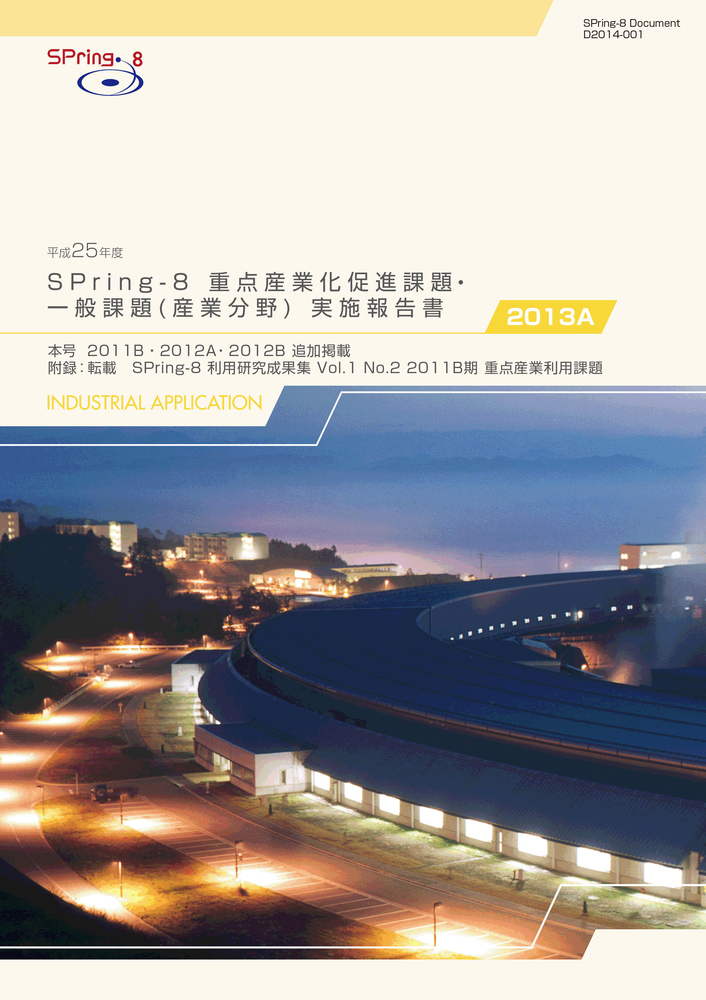
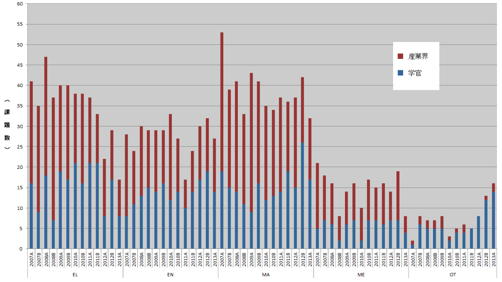
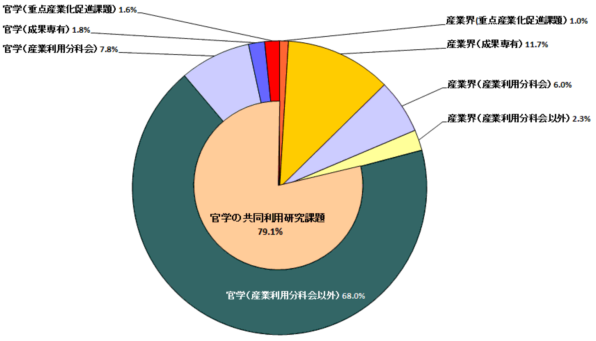
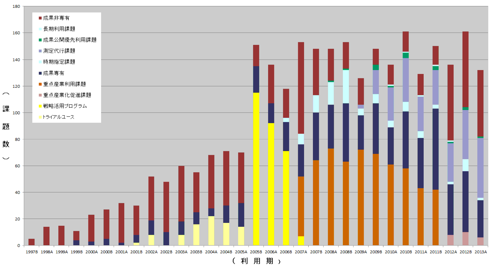
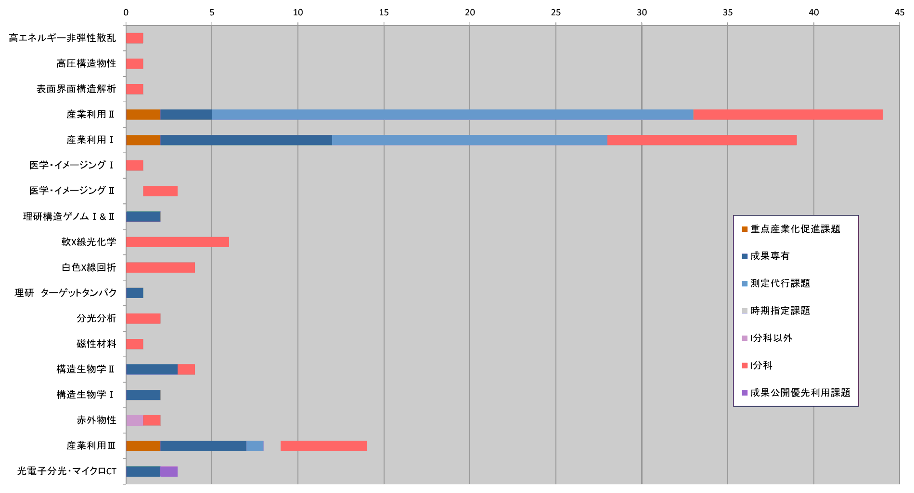

目次

1. はじめに2. 課題募集制度の概要
3. 成果公開の考え方
4. 実施状況
5. 産業利用分野の利用動向
6. 報告書の採録対象
7. 報告書
* 送付を希望される方は、連絡先（氏名、所属、〒住所、E-mail）をご記入の上、 事務局 support@spring8.or.jp までE-mailでご連絡ください。
はじめに
平成24年度（2012A期）より産業利用分野成果非専有課題のおもな利用制度は一般課題と重点産業化促進課題になっている。 本報告書は2013A期の産業利用分野における課題実施状況の報告を目的として実施した一般課題（産業利用分野）と 重点産業化促進課題のうちSPring-8利用研究成果集としての審査を行わなかった課題の報告書を収録したものである。
課題募集制度の概要
- 一般課題（産業利用分野）
一般課題（産業利用分野）の課題とは、課題申請の際に産業利用分野（I）での課題審査を希望した成果非専有の一般課題 （課題審査は課題審査委員会産業利用分科会が行う）を指し、課題申請者の所属で区別されるものではない。 大学等の公的研究機関に所属する者でも、一般課題（産業利用分野）への申請は可能である一方、 民間企業に所属する者が他の審査分野に申請することも可能である。 なお、民間企業に所属する者が産業利用分野以外の分野に申請した課題は一般課題（産業利用分野）としては扱わない。 一般課題（産業利用分野）の募集は他分野の一般課題と同様に、年2回の課題募集期間において全ての共用ビームラインへの申請が可能である。 これに加えて、平成23年3月2日実施した重点産業利用課題評価委員会において、"継続が望ましい"と提言された 重点産業利用課題の制度を産業利用分野の一般課題に適用している。 この産業利用分野の一般課題に特徴的な制度は以下の4項目である。
a) 産業利用ビームラインI（BL19B2）、II（BL14B2）、III（BL46XU）は半期ごとに前半を1期、後半を2期とした2回の課題募集を行う（年4回課題募集を実施）。 1期と2期の両方で利用実験を行いたい場合は、継続的な研究内容の課題であってもその都度、新規課題として応募することが必要である。 なお2013A期よりこれらのビームラインでは成果非専有の一般課題は、審査希望分野が産業利用分野である一般課題（産業利用分野）のみとした。 これらのビームラインを指定した申請であるものの、審査希望分野が他分野の課題は申請者の希望にかかわらず産業利用分野で審査する。
b) 新規利用拡大の観点から課題審査において利用経験を考慮する。
c) 民間企業利用拡大の観点から課題審査において所属機関を考慮する。
d) 課題実施後約2～4か月以内に所定の書式の産業利用課題実施報告書を提出する。なお、この報告書はSPring-8利用研究成果集として審査を受けることも可能である。
e) 全採択課題に担当コーデイネーターを配置する。
f) 科学技術的妥当性に関する審査は
(1)産業基盤技術としての重要性および発展性
(2)社会的意義および社会経済への寄与度の観点を重視して実施する。
に重点をおいて実施する。
- 重点産業化促進課題
「重点産業化促進課題」は領域指定型の重点研究課題として、平成23年9月13日に指定された。 この「重点産業化促進課題」は、平成22年度に閣議決定された新成長戦略に掲げられているように研究開発のデスバレー克服に向けた、 大学や公的研究機関のみならず産業界からの利用を通じた産学官連携（産学官ネットワーク化）による技術開発を支援するものである。 この趣旨にもとづき、課題の募集、審査、実施及び報告は一般課題とは若干異なった制度となっている。
2-1) 募集の対象
産学官連携促進が目的であるため、研究組織（共同で実験を行うグループ、つまり実験責任者と共同実験者から成るグループ）が 「産学」、「産官」、もしくは「産官学」である課題を募集の対象とする。 例えば、産業界（民間企業を指す）を含まない「官学」の研究組織や産業界のみから成る組織は対象とはならない。 また、JASRIは独立した所属機関とは見なさない（JASRIは「産」「官」のいずれにもあたらない）。
申請の折には産学官連携が効果的に行われることを明らかにするために、課題実施にあたって、 それぞれの所属機関ごとの役割分担を明記することが求められる。
2-2) 対象ビームライン、シフト数割合、及び募集
産業利用ビームラインI（BL19B2）、II（BL14B2）、III（BL46XU）を対象に、ユーザー実験に供するビームタイムのうち15%以内を配分する。
募集は一般課題と同時期に半期2回行う。 なお、1期募集において後述の通期課題の2期分のシフト数も含めた合計シフト数が半期を通じたビームタイムの上限に達した場合は2期に募集を行わない。
2-3) 通期課題
1期、2期の両方で利用実験を行いたい場合は、その都度新規課題としての応募が必要であるが、継続的･計画的な実施により一層の成果創出が期待される課題は、 “通期課題”とし1期応募の折に2期分のシフト数も含めた申請を受付ける。なお、2期は通期課題の募集は行わない。
2-4) 審査
最初に研究組織が産学官連携であるかどうかの申請要件について審査を行う。 申請要件を満たさない課題は重点産業化促進課題として不採択となる。 申請要件を満たす課題については、一般課題（産業利用分野）と同様に課題審査委員会産業利用分科会が行う。 なお、重点産業化促進課題として不採択となった課題は、自動的に一般課題（産業利用分野）の課題として、 他の一般課題と一緒に改めて審査される。 重点産業化促進課題においては一般課題（産業利用分野）の観点に加えて産官学連携が有効に機能するかどうかも含めて審査する。
2-5) 報告
WEBより提出するビームタイム利用報告書、利用実験課題報告書に加えて課題実施後約2～3か月以内に所定の書式の重点産業化促進課題実施報告書を提出する。 なお、この報告書はSPring-8利用研究成果集として審査を受けることも可能である。
成果公開の考え方
成果の公開については、重点産業化促進課題、一般課題（産業利用分野）ともに他の成果非専有の一般課題と同様に学術誌上への論文掲載（博士論文も含む）
もしくはSPring-8利用研究成果集への採録による成果公開が求められる。
この産業利用課題実施報告書及び重点産業利用課題実施報告書の提出は成果の公開とは認定されないが、
これらの報告書は著者からの申し出によりSPring-8利用研究成果集としての審査を受けることが可能である。
SPring-8利用研究成果集としての審査を受けない実施報告書は、JASRIコーデイネーター等による校閲を経て課題実施期が終了して約6カ月後に出版･公開されるが、
それ以外はSPring-8利用研究成果集としての審査終了後に公開される。
なお、一般課題（産業利用分野）は実験終了後一定期間内に成果専有課題への切替を申請することができるが、
重点産業化促進課題は成果専有課題への切替は認めない。なお、平成25年度2013A期の一般課題（産業利用分野）及び重点産業化促進課題の実施報告は、平成26年9月に開催予定の 「第11回産業利用報告会」等で口頭及びポスター形式での報告を予定している。
実施状況
以下に平成25年度2013A期の重点産業利用課題、及び一般課題（産業利用分野）の応募・採択結果を表1、表2にまとめる。- 応募・採択結果 重点産業化促進課題
表1．応募時期及び研究機関別課題応募・採択結果
*重点産業化促進課題で不採択となり、一般課題として再審査され採択された課題は 採択数から除外している。募集時期 機関分類 応募数＊ 採択数＊ 採択率（%） 第1回募集 学官 12 6 50.0 産業界 6 6 100.0 合計 18 12 66.7 第2回募集 学官 2 1 50.0 産業界 2 0 0.0 合計 4 1 25.0 総計 22 13 59.1
今回の重点産業化促進課題の採択率は1期66.7%で一般課題（産業利用分野）とほぼ同じであった。 これは、2012B期までは重点産業化促進課題の不採択理由が官学のみ研究組織など応募要件を満たさないものが3-4割程度と多かったが、 この制度の認知が進んで要件未達課題は極く一部となったためと考えられる。 このことは、新しい利用制度の利用者への認知には1年程度必要であることを示している。 なお、BL19B2は2013A期と同様に第1期に第2期分のビームタイムも含めて通期課題として採択された課題があったため、 第2期の重点産業化促進課題の募集を行わなかった。 なお、2013A第2期は採択率が25%と極めて低いものの、応募課題数が4件と極めて少ないために採択率を一般課題と比較することはできない。 2013A第2期の応募課題4課題のうち3課題はBL14B2に応募されたものであり、募集枠の12シフトに対して合計15シフト分の応募があった。 しかし、申請内容が採択に値しないと判断され、採択枠があるにもかかわらず全件不採択となった。 のこりの1件はBL46XUへの12シフトの応募で、募集枠の9シフトを越えていたため、配分ビームタイムを9シフトとして採択された。
重点産業化促進課題は不採択となっても改めて一般課題として再審査される制度があるが、 2013A第1期においては重点産業化促進不採択課題6件のうち、一般課題として採択になった課題が3件あった。 2013A第2期では、重点産業化促進不採択の3課題全部が一般課題としても採択されなかった。
- 応募・採択結果 一般課題（産業利用分野）
表2．応募時期及び研究機関別一般課題応募・採択結果
*応募数には重点産業化促進課題で不採択となり、一般課題として再審査された課題 （1期産業界 0、学官 3、2期 なし）、及び重点グリーン/ライフ･イノベーション推進課題で 不採択となり一般課題として再審査された課題（1期のみ 産業界 1、 学官1）を含む。 また、採択後に12条課題に分類されるJASRI職員から申請された課題を応募数（1期 16課題、2期 6課題）、 採択数（1期 13課題、2期 6課題）を含む。 12Bで1年課題として採択され13Aで実施した1課題は応募、採択から除外している。募集時期 機関分類 応募数＊ 採択数＊ 採択率（%） 第1回募集 学官 56 39 69.6 産業界 43 26 60.5 合計 99 65 65.7 第2回募集 学官 33 19 57.6 産業界 21 14 66.7 合計 54 33 61.1 総計 153 98 64.1
一般課題（産業利用分野）は全応募数が153課題で2012A期の応募数125課題より増加し2012B期の163課題とほぼ同じ水準となっている。 2013A期第2期の応募数は2012A第2期の42課題、2012B第2期の44課題とほぼ同じであり、2013A第1期の増加が顕著である。 これは、2012A期は審査希望分野を産業利用分野以外を指定してBL14B2、BL19B2、BL46XUに応募することが可能であったために、 これら3本のビームラインに産業利用分野以外の課題が少なからず応募されたことが原因と考えている。 このため、応募、採択数を前年同募集期と比較することは困難であるため、以下は2012B期との比較検討を行う。
2013A第1期の産業界の応募数は43課題で2012B第1期の51課題より若干の減少、13A第2期は12B第2期とほぼ同じになった。 例年、B期の方がA期よりも応募が多い傾向があるため、第1期の若干の減少は季節変動の範囲内と考えている。
2013A期の一般課題（産業利用分野）の採択率は１期65.7%、2期61.1%で、2期の方が1期よりも採択率が低いことはこれまでと同様であるが、 1, 2期ともに約70％に達した2012B期よりも若干低くなっている。 なお、2012A期、2012B期とも産業界の課題採択率が学官よりも著しく低かったが、2013A第1期、2期ともに産業界と学官で大きな違いはなかった。
- SPring-8利用研究成果集としての審査
前記のとおり2011B期より成果公開の扱いが変更になったため、実験責任者の希望に応じて重点産業利用報告書をSPring-8利用研究成果集として 査読審査を受けて公開文書として扱うことも可能とした。 重点産業化促進課題及び産業利用分野の一般課題も同様で、SPring-8利用研究成果集として審査を受ける公開文書とすることができる。 平成26年1月10日の時点で実施報告書作成対象88課題のうち29課題がSPring-8利用研究成果集としての審査を希望している。 公開は査読審査が終了し成果審査委員会での承認後となるため、これら29課題の報告書はここには採録されない。
産業利用分野の利用動向
-
１)産業分野ごとの動向
図1は、産業利用分科会で審査を経て採択された成果非専有課題実施件数の推移である。 2012A期以降は重点産業化促進課題と一般課題（産業利用分野）の和、2011B期以前は重点産業利用課題と一般課題（産業利用分野）の和である。 2012B期に一旦は回復したものの、2013A期は、かつて産業利用の主役であったエレクトロニクス分野（EL）の割合が大きく減少し、 素材分野（MA)、エネルギー環境分野（EN)よりも実施件数が少なく、その他（OT）とほぼ同じになった。 エレクトロニクス分野（EL)における産業界の実施件数は2011B, 2012Bとほぼ同数であるが学官の実施件数の減少が顕著（2012B期の半分程度）である。 一方、2011B期以来増加回復傾向にあったエネルギー環境分野（EN)は、2012B期より若干減少し2011B期程度にまで落ち込んだ。 こちらも学官の減少が目立っている。 さらに、2013A期においても実施課題数がもっとも多いのはこれまでどおり素材分野（MA)であるが、こちらも学官の実施減少が見られる。 なお、その他（OT）が学官の利用を中心に2010A以降、増加傾向であることが興味深い。

図1. 産業利用分野における成果非専有課題実施件数
２）2013A期における民間企業の利用状況
図2は2013期共同利用研究実施課題（共用ビームラインで実施した課題）を所属機関、専有 ／非専有の別でその割合を示している。 民間企業に所属する実験責任者の課題数が全体の20.9％で、その内訳は一般課題（産業利用分野）が6.0%、重点産業化促進課題が1.0%、 測定代行を含む成果専有課題が11.7%と企業による課題のほぼ半分に達している。 企業利用に占める成果専有課題の割合が50%を超す状態は2011A期以降持続していることから、 企業に成果専有利用が定着しつつあることを示すものと考えている。 なお、民間企業が実験責任者で産業利用以外の分野で採択された課題が、重点産業化促進課題を含めた全成果非専有課題の約1/4に増加している。 これはBL14B2、BL19B2、BL46XUの産業利用ビームラインで提供している以外の放射光利用技術を用いた課題であるため、 民間企業における放射光利用技術の幅の広がりを示すものと考えられる。

図2. 2013A期 共同利用研究実施課題における民間企業の実験責任者の割合
３）民間企業の課題実施動向
図3は共用ビームラインにおける民間企業の課題実施状況の推移を課題種ごとに示している。 毎年A期はB期よりも実施課題数が少ない傾向があるが、2013A期も2012B期より実施課題が少なく2011A, 2012A期並みであり大きな変化は見られなかった。 なお、測定代行が2012Aよりも若干多くなっている。

図3．民間企業による共同利用研究実施課題の課題分野別推移
４）民間企業の共用ビームライン利用状況
2013A期におけるビームラインごとの民間企業による利用件数を図4に示す。 一般課題（産業利用分野）は17本のビームラインで実施され、民間企業による放射光利用技術の広がりを示している。 特に、高エネルギー非弾性散乱や高圧構造物性など産業利用との関係が薄いと思われるビームラインも民間企業の利用があることは大変興味深い。 一般課題（産業利用分野）及び成果専有課題は、産業利用ビームラインI、II、III（それぞれBL19B2、BL14B2、BL46XU）での実施が 他のビームラインよりも著しく多いのはこれまでと同様である。 また、これらのビームラインにおいて測定代行を含む成果専有課題が一般課題（産業利用分野）及び重点産業化促進課題などの審査課題よりも 実施件数が多くなるのもここ数年の傾向である。 なお、産業利用III（BL46XU）の課題実施件数が産業利用I（BL19B2）、II（BL14B2）よりも著しく少ないのは、 BL46XUが提供している装置が多軸回折装置と硬X線光電子分光装置であり、どちらも実験に比較的長いシフト数が必要であることが原因と考えている。 特に、硬X線光電子分光装置は試料交換の際の真空引きに要する時間が長いため、試料交換効率化に向けた取り組みが必要と考えている。

図4．2012A期 利用技術分野別（ビームライン別）民間企業利用件数
報告書の再録対象
平成26年1月10日の時点で課題のうち29課題が利用研究成果集としての審査を希望している。
これ以外の59課題の重点産業化促進課題実施報告書と産業利用課題実施報告書を採録している。
また、追加掲載として、2011B期3課題、2012A期3課題、2012B期2課題も掲載している。
また、SPring-8利用研究成果集としての査読審査が完了し新たに採択、公開された2011B期に実施した重点産業利用課題の報告も、
附録として利用研究成果集より転載している（http://user.spring8.or.jp/resrep/?cat=4）。
SPring-8利用研究成果集 Vol.1 No.2 2011B期 重点産業利用課題 （http://user.spring8.or.jp/resrep/?cat=4）
連絡先（氏名、所属、〒住所、E-mail）をご記入の上、事務局 support@spring8.or.jp までE-mailでご連絡ください。